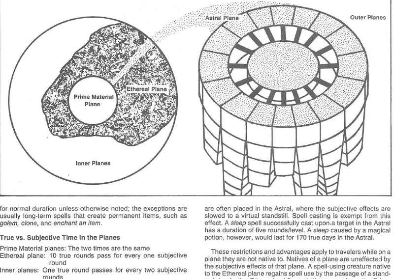

位面的类别 · The Planes
本书把位面分成四类：原初位面、内层位面、星界位面和外层位面。
- 原初位面 Prime Material Plane：大多数冒险者熟悉的物质世界。它是其他位面的参照点，也是生物、自然和通常魔法的出发处。
- 内层位面 Inner Planes：元素力量及其混合形态所在的位面，包括空气、火焰、土、水，以及准元素和准位面。
- 星界位面 Astral Plane：连接原初位面与外层位面的广阔通道。它是思想、灵魂和旅行的领域。
- 外层位面 Outer Planes：神祇、恶魔、魔鬼、天使及其他强大力量的领域。它们通常与阵营、信仰和宇宙秩序相关。
以太位面位于原初位面与内层位面之间；它是一个特殊的过渡空间。原初位面、内层位面与外层位面之间的交通方式并不完全相同，位面之间也可能存在边界、通道、颜色池、门或其他特殊连接。
